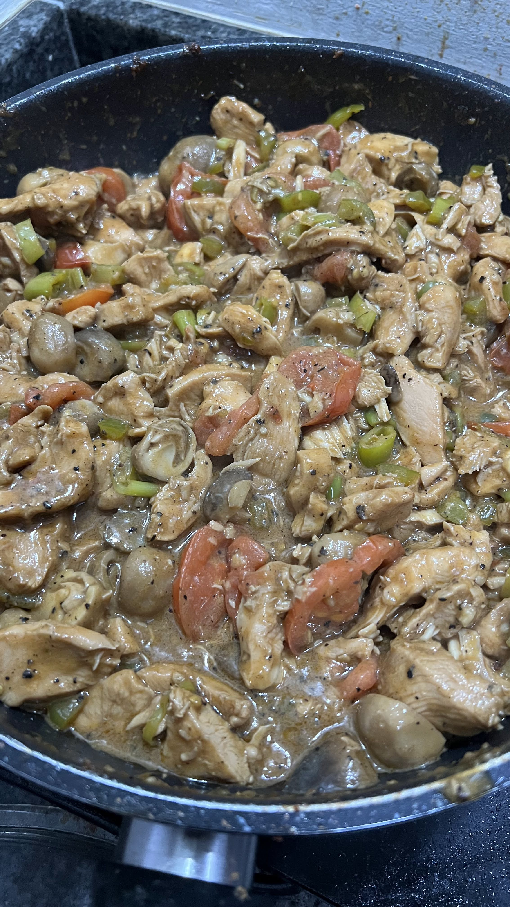

Chicken Salpicao

Description
This dish is perfect for people who are health conscious and likes a little bit of spice in their food. The ingredients are probably sitting in your kitchen and cooking it is not overly complicated.
If you love spicy food and still want to hit your daily macros, this recipe is for you!
Ingredients
- 1 kg chicken breast
- 1 teaspoon chicken powder
- 1.5 teaspoon ground black pepper
- 1.5 teaspoon garlic salt
- 1.5 teaspoon paprika
- 1 teaspoon sesame oil
- 1 tablespoon brown sugar
- 2 tablespoons oysters sauce
- 1 tablespoon soy sauce
- 4-5 tablespoons Worcestershire sauce
- 3 tablespoons Savor or any liquid seasoning
- 2 tablespoons olive oil
- 8-10 tablespoons water
- 2 tablespoons ketchup or tomato sauce
- 2 cans (425g) of Tai Hing mushrooms
- 1 sliced serrano pepper
- 5 cloves of garlic (minced)
- 2 green bell peppers
- Crispy garlic (for toppings)
Steps
- Prepare serrano pepper, garlic and bell peppers. Chop and mince then set aside.
- Dice chicken breast, set aside.
- Prepare a cooking pot then add all of the dry ingredients and seasoning inside it.
- Add all of the liquid ingredients in the same pot. Stir gently and make sure the dry ingredients are dissolved.
- Set your stove to medium heat and add your chicken breast inside the pot
- Let it boil and stir gently as needed until the chicken is fully cooked.
- Prepare a pan and stir-fry your garlic, peppers, and mushrooms. Add salt and pepper as needed.
- Transfer your stir-fried vegetables inside the pot. Stir gently until everything is combined.
- Add crispy garlic upon serving the dish.
Click here to explore more recipes.